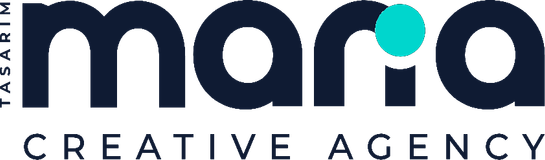

× Smile Group
× Smile GroupReklam trafiği kiralık, bu ikili kalıcı varlık. Bu sayfa uluslararası sitenin sayfa sayfa haritası, kampanya landing'inin blok blok anatomisi ve chatbot'un cümle cümle konuşma akışıdır — yapım ekibi bu sayfayla brief'siz çalışır.
Ayrı yurt dışı platform (Madde 8/a şartı): smilegroup-international yapısı. Eylül'de EN, Ekim'de DE, Kasım'da FR dizinleri açılır — her dil kendi kampanya ayıyla doğar.
Her kampanyanın (NHS, Deutsche Marken, Devis 24h...) landing'i aynı iskeletten türetilir; yalnız içerik değişir. Meta, landing'i de denetler — bu şablon reklam onayının da garantisidir.
Kampanyanın ana cümlesi + destek görsel + tek CTA (WhatsApp). Dikkat süresi 3 sn: tek mesaj, sıfır kalabalık.
4 kanıt rozeti: yetki belgesi · marka implantlar · Trustpilot skoru · yıllık hasta sayısı.
Ülke fiyatı vs paket ("London £2,400 → from £650") + kapsam dipnotu. FR'de "remboursement" iması YOK.
Foto gönder → 24s plan → İstanbul'da tedavi → aftercare. Belirsizlik = kaybedilen lead; adımlar süreleriyle yazılır.
Tek onamlı video (60-90 sn) — kampanyanın ülkesinden hasta tercih edilir (aksan = güven).
O kampanyanın 5 kritik itirazı (aftercare, malzeme, süre, ağrı, garanti) akordiyon formatında.
WhatsApp butonu + 60sn test alternatifi + telefon. Yapışkan alt bar mobilde hep görünür.
Bot satıcı değil karşılayıcı ve eleyicidir: dili algılar, niyeti anlar, doğru bilgiyi verir, doğru anda insana devreder. Amaç lead'i botta tutmak değil, koordinatöre ısınmış teslim etmektir.
Gelen mesajın dilinden (EN/DE/FR/AR/TR) otomatik dil seçimi → o dilde selamlama: "Hi! I'm Smile Group's assistant. How can I help you today?" + 4 hızlı seçenek çipi.
Tedavi adını yakalar → 3 cümlelik özet + süreç videosu linki + "size özel plan için diş fotoğrafınızı/röntgeninizi paylaşabilirsiniz" yönlendirmesi. Tıbbi tavsiye VERMEZ; "hekim değerlendirmesiyle netleşir" kalıbı sabittir.
Fiyat bandı + kapsam dipnotu (yalnız yabancı dilde — Türkçe yazan kişiye fiyat/paket/kampanya bilgisi verilmez, bilgilendirme + koordinatöre devir akışına düşer) → hemen ardından değer çerçevesi: pakete nelerin dahil olduğu → "kesin teklif için 2 dakikada fotoğraf değerlendirmesi" teklifi. Fiyat söyleyip susmak yasak; her fiyat bir sonraki adıma bağlanır.
KVKK/GDPR onay metni (tek dokunuş) → selfie ister → analiz sonucu "temsilidir" ibaresiyle → "hekimimiz gerçek planınızı çıkarsın mı?" → koordinatör kuyruğuna sıcak lead olarak düşer.
2 başarısız eşleşmede otomatik devir: "Sizi koordinatörümüze bağlıyorum" → mesai içi <5 dk canlı devir; mesai dışı randevu sözü + sabah ilk arama. Çözülemeyen soru metniyle birlikte koordinatöre iletilir — hasta adayı asla kendini tekrar etmez.
Bot özet kartı düşürür: dil · ülke · tedavi · paylaşılan görseller · sorulan sorular · itiraz sinyali. Koordinatör konuşmaya sıfırdan değil, dosyayla başlar.
Bot gece de tam çalışır; tek fark kapanış cümlesi: "Koordinatörümüz sabah 09:00'da ilk sizi arayacak — uygun saatiniz?" Sabah listesi otomatik oluşur, 5 dk kuralı mesai açılışında işler.
Bot yalnız onaylı bilgi tabanından konuşur (tedavi özetleri, paket içeriği, SSS). Emin olmadığında uydurmaz, devreder. Bilgi tabanı ayda 1 güncellenir; her güncelleme hekim onaylıdır.
Haftalık izlenen 4 metrik: yanıtlanan konuşma oranı · bot→insan devir hızı · gülüş testi tamamlama · çözülemeyen soru listesi (her biri bilgi tabanına aday). Tüm sorular satış sinyali olarak raporlanır.
Before-after yasağını zarifçe aşan tek format: dönüşümü reklamda göstermeyiz, kullanıcı kendi selfie'sinde görür. Benzer araçlar sanal konsültasyonda %90+ kapanış raporluyor — bizim huninin kalbi bu.
"Upload a selfie, see your smile design in 60 seconds." Tek buton, örnek simülasyon karesi (temsili etiketli).
4 dilde kısa açık rıza: fotoğrafın işlenme amacı + saklama süresi + silme hakkı. Onaysız yükleme yok — hukuki zırh.
"Gülümseyin, ışığa dönün" çerçeve kılavuzu; kötü kare otomatik uyarısı (karanlık/bulanık) — analiz kalitesi girişte korunur.
~15 sn bekleme deneyimi: diş hizası/renk/oran göstergeleri sırayla işlenir — bekleme, güven sahnesine dönüşür.
Simülasyon + 3 kişisel gözlem ("renk tonu 2 kademe açılabilir") + zorunlu ibare: bu bir ön-izlemedir, teşhis değildir.
"Hekimimiz gerçek planınızı çıkarsın" → tek dokunuşla sohbete; simülasyon + analiz özeti koordinatöre otomatik düşer.
Meta sağlık kısıtları alt-huni optimizasyonunu kapattı — dönüşüm artık bizim zeminimizde ölçülür. Standart baştan doğru kurulursa hiçbir veri kaybolmaz.
utm_campaign=[ulke]-[kampanya]-[ay]örn. uk-nhs-eyl · de-hkp-eki
Kreatif adı = dosya adlandırma standardıyla birebir (SG_INT_priceboard_...) — rapordaki her satır arşivdeki dosyaya 5 saniyede izlenir.